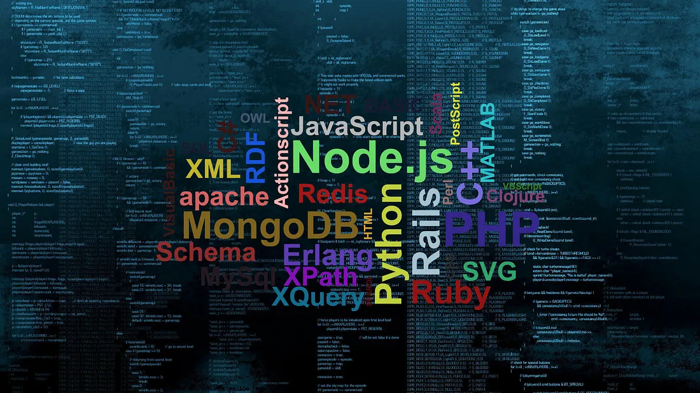

Current Courses

1ST YEAR COURSES
CS 1026:
CS 1027:
CS 1033:
Computer Science Fundamentals I
Computer Science Fundamentals II
Multimedia and Communication
This is an introductory computing programming course in the Python language. Students do not need prior programming experience to take this course. It is mandatory for students who wish to go through a major in Computer Science.
This is an introductory computing programming course in the Python language. Students do not need prior programming experience to take this course. It is mandatory for students who wish to go through a major in Computer Science.
This course immerses students in multimedia creation, exploring sound, image, text, and animation using various software tools. With a focus on HTML and Affinity Photo, students learn to translate their creative ideas into immersive digital experiences.
2ND YEAR COURSES
CS 2034:
CS 2208:
CS 2210:
Data Analytics: Principles and Tools
Introduction to Computer Organization and Architecture
Data Structures and Algorithms
In this course, students learn how to use spreadsheet platforms such as Excel to analyze and visualize data. It also covers other data analysis tools and concepts such as machine learning.
This mandatory-for-CS-students course explains how computers work internally and the different parts of the computer system. It also covers assembly language for low-level commands.
This course is similar to CS 1027 but with more advanced topics. It is also taught in Java and covers a lot of data structures and abstract data types such as graphs, hash tables, and different types of trees. It also introduces the notion of time complexity to measure the efficiency of algorithms.
3RD YEAR COURSES
CS 3319:
CS 3346:
CS 3388:
Databases I
Artificial Intelligence I
Computer Graphics I
In this course, students learn about relational databases and entity-relationship diagrams. They learn how to design databases and how to create, populate, and retrieve from them using the SQL language.
This course introduces some of the fundamental concepts behind artificial intelligence. It includes various forms of searches, Bayesian networks, machine learning, and deep neural networks.
This course explores different techniques for computer graphics both in 2D and 3D. It teaches students how to create, transform, and apply shading to computer graphics using code and a lot of mathematics!
4TH YEAR COURSES
CS 4474:
CS 4481:
CS 4482:
Human-Computer Interaction
Image Compression
Game Programming
This course covers topics in human-computer interaction which is essentially the study of how people use computers and technology. Students in this course will study different ways to analyze interactive systems and principles for designing such systems to be effective for their users.
In this course, students study different compression and encoding techniques for compressing images. They study not only the common formats like JPEG and GIF but other, more advanced, approaches as well.
This course covers a variety of topics related to video games including their history, principles of game design, ethics in video games, and the game development process. Students in this course are required to create their own small video game as a group project!
For a complete list of courses being offered, visit this site.